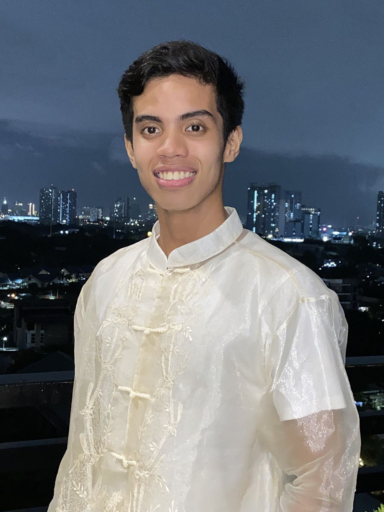

Advocacy Preparation for IMPAC6 Congress (Senegal, 2027)
Preparing as a youth delegate to advocate for marine conservation and sustainable ocean governance at the 6th International Marine Protected Areas Congress (IMPAC6).
Restoring Earth and Life
Climate Activist & Multimedia Storyteller
I'm Renz Luyao, a climate activist and multimedia storyteller. I serve on the Youth Leadership Council of WWF Philippines and EarthEcho International, championing environmental conservation.
Preparing as a youth delegate to advocate for marine conservation and sustainable ocean governance at the 6th International Marine Protected Areas Congress (IMPAC6).
Presented an innovative ocean-based solution to address climate challenges, demonstrating leadership in cross-sectoral advocacy.
Served as a keynote speaker during the opening remarks and participated in high-level panels, contributing to global ocean conservation dialogues.
Selected as a delegate to the Earthshot Prize in Brazil, engaging with global leaders and innovators to accelerate solutions for environmental challenges.
Represented youth perspectives at a renewable energy summit, fostering dialogue on sustainable energy transitions and policy advocacy.
Competed in a regional hackathon, developing solutions to advance renewable energy adoption and energy justice across Southeast Asia.
Engaged in climate advocacy during New York Climate Week and UN General Assembly (UNGA) side events, networking with policymakers and global stakeholders.
Participated in discussions on futures thinking and sustainability, contributing to forward-looking strategies for climate resilience.
Incubated a youth-led environmental project under WWF Singapore's "We Got This" program, focusing on ecosystem restoration and biodiversity conservation.
Advocated for renewable energy transitions as part of the Climate Reality Project, mobilizing communities for climate action.
Participated in discussions on energy policy, sustainability, and regional cooperation at a high-level international forum.
Email me at: renzluyao.atwork@gmail.com